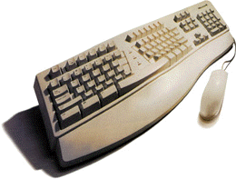
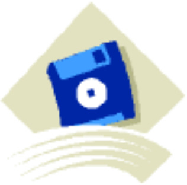

|
科 技 先 锋 |
本报记者：IQ 第一版 ＊ |
|||
|
 |
电脑的硬件是极其重要的，他一般存放着电脑的大脑与控制器、处理器，等。当然这些器材都十分重要缺一不可 |
|
目前上网又成为一热门儿， 其实我们上的那个因特网早 就成为电脑高手的研究对象 小学生、中学生、大学生、 的学习目标了。 |
|
| 此图为硬件： |
上网： |
|||
|
 |
电脑的磁盘也是相当中要的它们分别是软盘、 硬盘、光盘、优盘、老式大软盘等。可随着科 学技术的发展老式的大软盘已经被淘汰了，我 相信在过一段时间（用不了几年）小软盘也要 被淘汰。 |
电脑虽然是个万事通但这全是电脑的程序 帮的忙，可见程序对电脑是多么的重要啊 ！但是对电脑来说电脑的容量太小多好的 程序也就让电脑泡汤了。（请见右图我们 常用的一个电脑程序图标。 |
||
|
以上为磁盘： |
电脑图标 |
|||